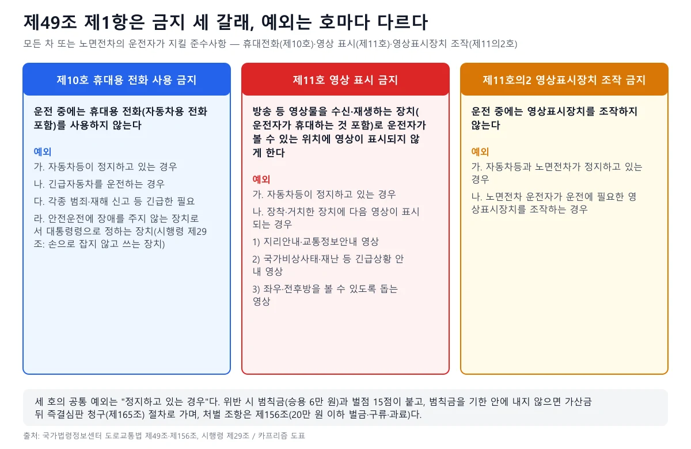
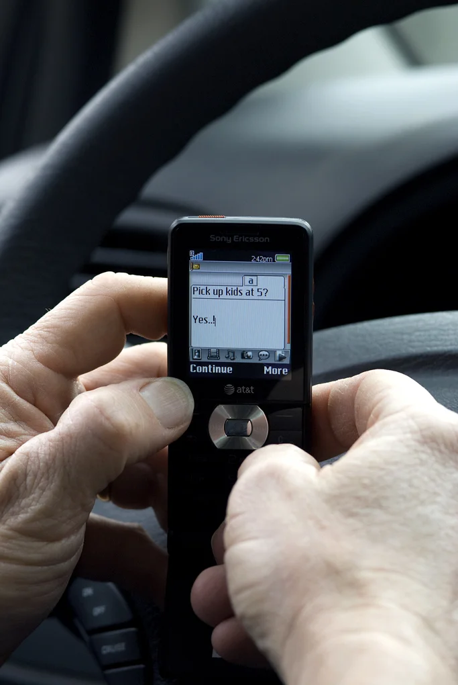
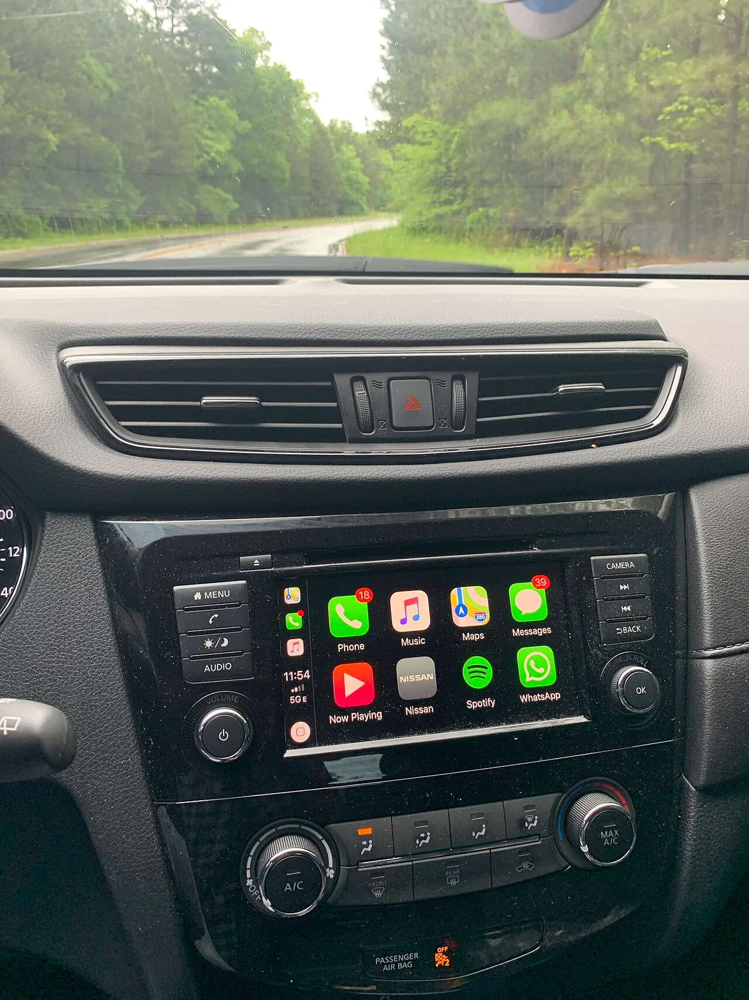
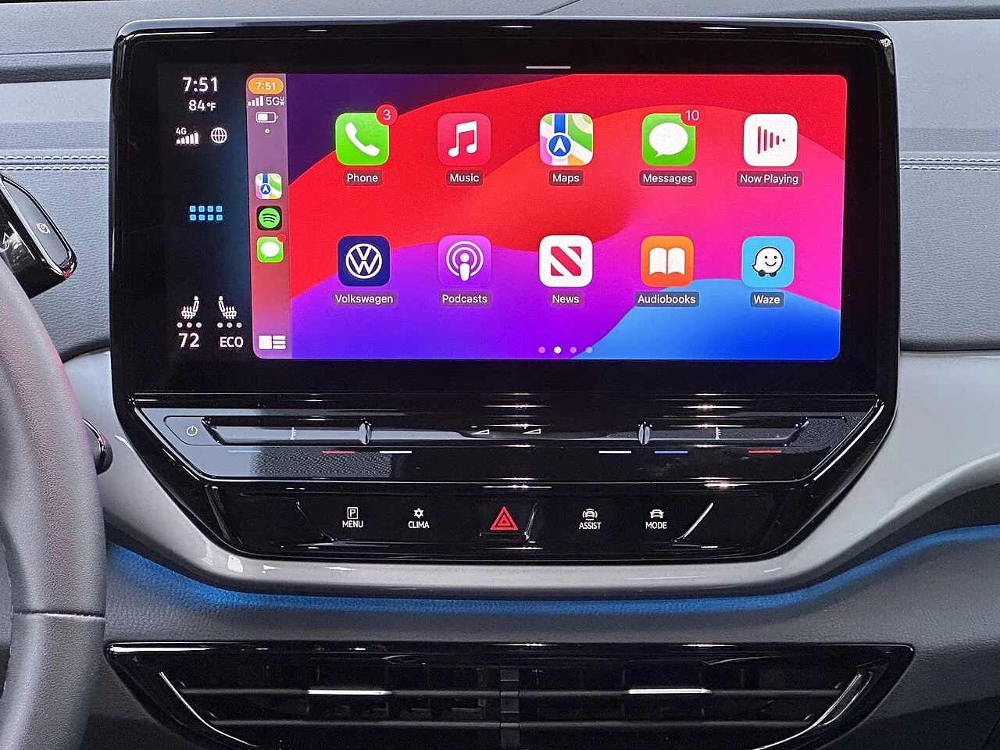
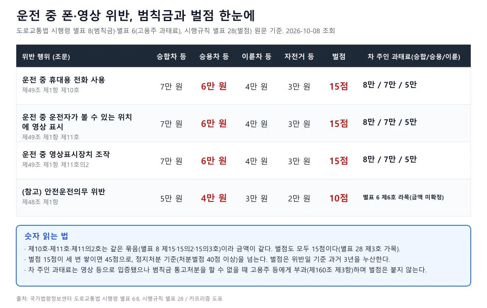
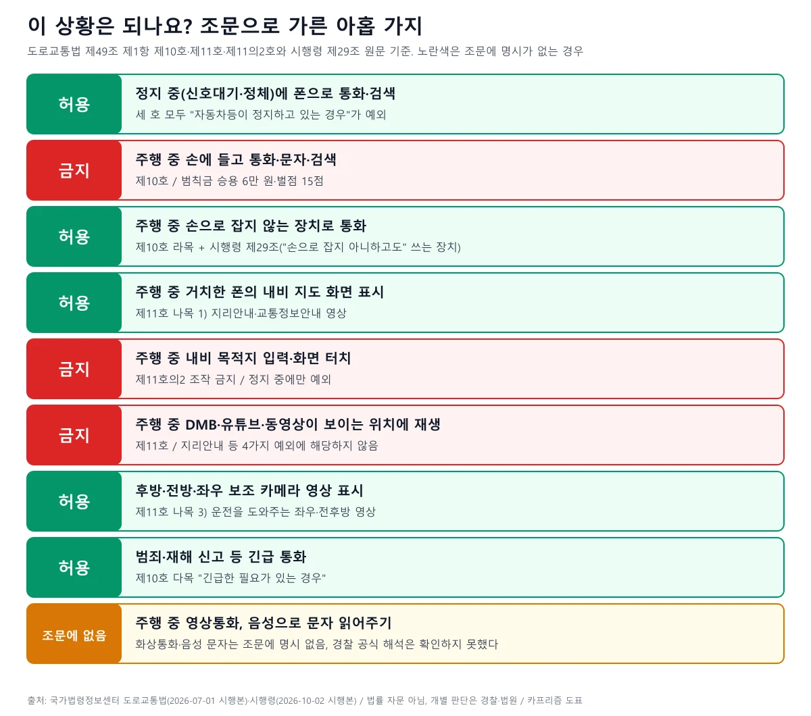

▲ 운전석에서 폴더형 휴대전화를 손에 든 모습(촬영 시점·장소 미상). 손으로 쥔 채 쓰는 전화는 시행령 제29조가 예외로 든 "손으로 잡지 아니하고도" 쓰는 장치가 아니다 ⓒ Ed Brown (Edbrown05), Wikimedia Commons (CC BY-SA 2.5)
"신호 걸렸을 때는 괜찮죠?", "내비 지도는 보는데 목적지는 신호 대기 때 쳐야 하나요?" 운전 중 휴대전화와 영상 규정은 한 조문(도로교통법 제49조 제1항)에 세 갈래로 흩어져 있어 "되는 것"과 "안 되는 것"이 자주 뒤섞인다. 이 글은 국가법령정보센터의 법·시행령·시행규칙 원문을 2026년 10월 8일에 직접 열어 확인한 조문, 범칙금·벌점·과태료 숫자, 법제처 생활법령 안내를 근거로 아홉 가지 상황이 어디에 해당하는지를 가려 보았다. 거치대를 어디에 붙이느냐는 카프리즘의 스마트폰 거치대 기사에서 다뤘으므로, 이 글은 거치대 위치가 아니라 조문의 문언과 예외, 제재 숫자에 집중한다. 법률 자문이 아니며, 개별 사안의 판단은 경찰과 법원이 한다.
1. 조문 원문 — 한 조항, 세 개의 호

▲ 제49조 제1항 세 호의 금지와 예외(카프리즘 제작, 국가법령정보센터 원문 기준)
2026년 10월 현재 시행 중인 도로교통법(2026년 7월 1일 시행본) 제49조 제1항은 "모든 차 또는 노면전차의 운전자는 다음 각 호의 사항을 지켜야 한다"고 시작한다. 이 가운데 휴대전화·영상 관련 세 호를 그대로 옮기면 다음과 같다.
| 호 | 금지 내용(원문 요지) | 예외 |
|---|---|---|
| 제10호 | 자동차등 또는 노면전차의 운전 중에는 휴대용 전화(자동차용 전화 포함)를 사용하지 아니할 것 | 가. 정지하고 있는 경우 / 나. 긴급자동차를 운전하는 경우 / 다. 각종 범죄 및 재해 신고 등 긴급한 필요가 있는 경우 / 라. 안전운전에 장애를 주지 아니하는 장치로서 대통령령으로 정하는 장치를 이용하는 경우 |
| 제11호 | 운전 중에는 방송 등 영상물을 수신하거나 재생하는 장치(운전자가 휴대하는 것을 포함, "영상표시장치")를 통해 운전자가 운전 중 볼 수 있는 위치에 영상이 표시되지 아니하도록 할 것 | 가. 정지하고 있는 경우 / 나. 장착하거나 거치하여 놓은 영상표시장치에 1) 지리안내·교통정보안내 영상, 2) 국가비상사태·재난상황 등 긴급상황 안내 영상, 3) 운전할 때 좌우 또는 전후방을 볼 수 있도록 도움을 주는 영상이 표시되는 경우 |
| 제11호의2 | 운전 중에는 영상표시장치를 조작하지 아니할 것 | 가. 자동차등과 노면전차가 정지하고 있는 경우 / 나. 노면전차 운전자가 운전에 필요한 영상표시장치를 조작하는 경우 |
눈여겨볼 점이 세 가지다. 첫째, 제11호의 '영상표시장치'는 "운전자가 휴대하는 것을 포함"한다. 차에 달린 화면만이 아니라 손에 든 스마트폰·태블릿도 포함된다는 뜻이다. 둘째, 제10호는 "휴대용 전화를 사용"을, 제11호는 "영상이 표시"를, 제11호의2는 "조작"을 각각 따로 금지한다. 금지 행위가 세 개이므로 한 행동이 두 호에 걸릴 수도 있다. 셋째, 제11호는 영상이 표시되는 것 자체를 막지만, 지리안내·교통정보·긴급상황·보조 영상은 예외다. 이 구조는 2012년 법 개정에서 만들어졌다. 행정안전부·경찰청 보도자료(2012년 10월 23일 등록)는 개정안이 "DMB 시청 금지"를 "영상표시장치를 통한 영상 표시 금지"로 넓히고, 자동차가 정지하지 않은 상태에서 영상표시장치를 조작하는 것도 금지한다고 설명했다. 같은 해 6월 입법예고 단계(정책브리핑 2012년 6월 27일자)에는 조수석 시청 금지가 담겨 있었지만, 10월 보도자료 설명과 현행 조문은 '운전자가 볼 수 있는 위치'로 한정돼 있다. 국가법령정보센터 도로교통법 바로가기
2. 정지 중이면 되나 — '운전 중'과 예외의 문언
세 호의 공통 예외는 "자동차등이 정지하고 있는 경우"다. 법제처 '찾기쉬운 생활법령정보'(2026년 9월 15일 기준) 카드뉴스도 "자동차가 정지 중에는 휴대전화를 사용할 수 있다"고 안내한다(이 카드뉴스는 신호대기 상황을 다루며, 페이지 본문에 '신호대기'라는 표현은 따로 없다). 같은 사이트는 "운전 중에는 휴대전화 사용이 금지되며, 위반하면 벌점과 범칙금이 부과된다"고 정리한다. 이 안내는 법적 효력이 있는 유권해석이 아니라고 스스로 밝힌다.
"정지"는 어디까지인가 — 조문이 말하지 않는 것
- 도로교통법 제2조 제26호는 "운전"을 도로에서 차마를 "그 본래의 사용방법에 따라 사용하는 것"(조종 또는 자율주행시스템을 사용하는 것 포함)으로 정의한다.
- 제49조의 예외 문언은 "정지하고 있는 경우"다. 신호대기·교통정체로 바퀴가 서 있는 상태가 이에 해당한다는 것이 생활법령 안내이고, 시동이 걸린 채 비상등을 켠 갓길 정차, 서행 중 정체 등 경계 상황을 경찰이 어떻게 판단하는지에 대한 공식 해석은 찾지 못했다.
- 정지 예외는 "정지한 동안"에만 적용되므로, 신호가 바뀌어 출발하는 순간부터는 다시 금지다. 신호 대기 중에 시작한 통화·영상은 출발 전에 끝내야 한다.
위반이 어떤 비용으로 이어지는지는 5번 절에서 정리한다. 신호위반·꼬리물기 등 다른 단속 유형과 헷갈리지 않도록 정리한 황색·꼬리물기 위반 판정 기사도 같이 보면 좋다.
3. 손에 안 들면 되나 — 핸즈프리와 '애매한 경우'
▲ 운전석에서 폴더형 휴대전화를 손에 든 모습(촬영 시점·장소 미상, 위키미디어 게시). 손으로 쥔 채 쓰는 전화는 시행령 제29조가 예외로 든 "손으로 잡지 아니하고도" 쓰는 장치가 아니다 ⓒ Ed Brown (Edbrown05), Wikimedia Commons (CC BY-SA 2.5)
제10호 라목의 예외는 "안전운전에 장애를 주지 아니하는 장치로서 대통령령으로 정하는 장치"다. 도로교통법 시행령 제29조(2026년 10월 2일 시행본)가 그 장치를 정의한다. 원문은 "손으로 잡지 아니하고도 휴대용 전화(자동차용 전화를 포함한다)를 사용할 수 있도록 해 주는 장치를 말한다"이다. 법제처 생활법령도 같은 내용을 안내하면서 '핸즈프리'라는 단어는 쓰지 않는다. 즉 조문이 기준으로 삼는 것은 "손으로 잡느냐 아니냐"이고, 블루투스 차량 연동·마이크 이어폰 같은 구체 기기 이름은 조문에 없다.
| 상황 | 조문·공식 안내에서 확인된 것 | 확인하지 못한 것 |
|---|---|---|
| 손으로 잡지 않는 장치로 통화 | 제10호 라목·시행령 제29조의 예외 문언에 해당 | 특정 기기(무선 이어폰 등)별 경찰 판단 기준 |
| 스피커폰으로 통화 | 손으로 잡지 않고 쓰는 방식이면 문언상 시행령 제29조 장치에 들어갈 여지가 있음 | 경찰 공식 해석. 폰을 손에 든 채 스피커폰을 켜는 경우는 문언상 "잡지 아니하고도"에 해당하지 않을 수 있음 |
| 영상통화(화면에 상대 얼굴 표시) | 제11호는 "방송 등 영상물을 수신하거나 재생하는 장치"를 통한 영상 표시를 금지. 영상통화 화면이 여기에 드는지는 조문에 명시 없음 | 경찰·법제처 유권해석 |
| 음성으로 문자 읽어주기·보내기 | 조문에 명시 없음. 화면 조작을 동반하면 제11호의2와 제10호의 쟁점이 생길 수 있음 | 경찰 공식 해석 |
| 핸즈프리 통화 중 주의 분산 | 제48조(안전운전의무)는 "다른 사람에게 위험과 장해를 주는 속도나 방법으로 운전"을 금지(범칙금 승용 4만 원, 벌점 10점) | 핸즈프리 통화가 제48조 위반으로 처리된 사례의 공식 통계 |
마지막 줄이 중요하다. 제10호 예외에 해당해도 통화에 몰입해 신호·보행자를 놓치면 별개로 제48조가 문제될 수 있다. 제48조는 조향장치와 제동장치를 "정확하게 조작"하라는 의무를 함께 정한다. 이 조항은 운전자 보조 기능을 켠 경우에도 적용되는 의무와 같은 뿌리여서, 카프리즘의 운전자 보조(ADAS) 한계와 법적 지위 기사에서 제56조의2 제2항(자율주행시스템 사용 시 제49조 제1항 제10·11·11의2호 미적용)과 함께 정리했다. 보조 기능을 켰다는 이유로 폰 규정이 풀리는지는 그 글에서 "확인하지 못했다"고 적은 쟁점이다.

▲ 핸들 앞에서 휴대전화 문자 입력 화면을 보는 모습(미국 오리건 교통국 게시 사진, 구형 휴대전화). 손에 든 채 화면을 보며 입력하는 행동은 제10호와 제11호의2가 모두 문제 삼을 수 있다 ⓒ Oregon Department of Transportation, Wikimedia Commons (CC BY 2.0)
4. DMB·유튜브는 안 되고 내비는 되는 이유
제11호의 구조를 보면 이유가 명확하다. 금지 대상은 "방송 등 영상물"을 운전자가 볼 수 있는 위치에 띄우는 것이고, 예외는 네 가지뿐이다. 정지 중이거나, 장착·거치된 장치에 지리안내·교통정보 영상, 긴급상황 안내 영상, 전후좌우 보조 영상이 나오는 경우다. 내비게이션 지도, 후방 카메라, 서라운드 뷰는 예외에 열거돼 있고, DMB 방송·동영상·OTT는 열거돼 있지 않다.

▲ 중앙 디스플레이에 휴대전화 연동 앱 화면이 떠 있는 실내(위키미디어 파일명 기준 닛산 캐시카이). 앱 아이콘 홈 화면을 누르거나 앱을 고르는 조작은 제11호의2가 정지 중에만 허용한다 ⓒ Rberchie, Wikimedia Commons (CC BY-SA 4.0)
이 지점에서 화면 표시와 조작은 다른 호라는 점이 중요하다. 지도 화면은 표시가 허용되지만, 목적지 입력·경로 변경·음악 선택처럼 화면을 만지는 조작은 제11호의2가 "운전 중에는 영상표시장치를 조작하지 아니할 것"이라고 막는다. 예외는 정지 중뿐(노면전차 운전자 제외)이다. 음성 명령으로 목적지를 입력하는 방식은 조문이 직접 다루지 않아 확인하지 못했다. 한편 제11호 나목은 영상이 표시되는 장치를 "장착하거나 거치하여 놓은" 장치로 한정해 적었으므로, 손에 쥔 스마트폰으로 내비 화면을 보는 경우의 판단은 거치대에 올린 경우와 같다고 단정할 수 없다. 이 부분의 경찰 공식 해석은 찾지 못했다. 거치대 위치에 따른 단속은 앞서 소개한 거치대 기사에서 다룬다.

▲ 무선 연동 방식의 차량 디스플레이 홈 화면(위키미디어 파일명 기준 폭스바겐 ID.4, 2023). 연결이 무선이어도 화면을 눌러 앱을 고르는 순간은 '조작'이다 ⓒ Sunnyboy122, Wikimedia Commons (CC0)
동승자와 뒷좌석 화면 제11호는 "운전자가 운전 중 볼 수 있는 위치에" 영상이 표시되지 않도록 하라고 정한다. 문언상 기준은 운전자가 그 영상을 볼 수 있는 위치에 표시되느냐이고, 동승자가 보는 것 자체를 막는 조문은 아니다. 다만 뒷좌석 모니터나 조수석 화면이 운전자 시야에 들어오는지는 장치 위치와 각도에 따라 달라지고, 구체 사례에 대한 경찰 판단은 확인하지 못했다. 화면을 어디에 붙이느냐는 카프리즘의 거치대 기사가 다뤘고, 반려동물을 안고 운전하는 경우처럼 다른 '운전 중 금지' 유형은 반려동물 동승 기사에 정리돼 있다.
5. 얼마나 내나 — 범칙금·벌점·과태료와 절차

▲ 위반 유형별 범칙금·벌점·고용주 과태료(카프리즘 제작, 시행령 별표 6·8, 시행규칙 별표 28 원문 기준)
범칙금은 도로교통법 시행령 별표 8이 정한다. 제15호(운전 중 휴대용 전화 사용, 제49조 제1항 제10호), 제15호의2(운전 중 영상 표시, 제11호), 제15호의3(운전 중 영상표시장치 조작, 제11호의2)은 같은 묶음이고 금액은 승합자동차등 7만 원, 승용자동차등 6만 원, 이륜자동차등 4만 원, 자전거등 및 손수레등 3만 원이다. 벌점은 도로교통법 시행규칙 별표 28 제3호 가목의 제17호(휴대용 전화), 제17호의2(영상 표시), 제17호의3(영상표시장치 조작) 세 항목이 같은 묶음으로 15점이다. 이 숫자는 법제처 생활법령의 범칙금·벌점 표와도 일치한다. 벌점은 시행령이 아니라 시행규칙 별표 28에 있다.
| 위반 유형 | 조문 | 범칙금 | 벌점 | 차 주인 과태료 |
|---|---|---|---|---|
| 운전 중 휴대용 전화 사용 | 제49조 제1항 제10호 | 6만 원 | 15점 | 7만 원 |
| 운전 중 영상 표시 | 제49조 제1항 제11호 | 6만 원 | 15점 | 7만 원 |
| 운전 중 영상표시장치 조작 | 제49조 제1항 제11호의2 | 6만 원 | 15점 | 7만 원 |
| (참고) 안전운전의무 위반 | 제48조 제1항 | 4만 원 | 10점 | 별표 6 제6호 라목에 해당(금액은 표 구조상 확정하지 못함) |
차 주인 과태료는 별개 제도다. 제160조 제3항은 제49조 제1항 제10호·제11호·제11호의2 위반 사실이 사진·비디오테이프 등 영상기록매체로 입증되고 제163조에 따른 범칙금 통고처분을 할 수 없는 경우에 고용주등에게 20만 원 이하의 과태료를 부과하도록 하며, 구체 금액은 시행령 별표 6 제8의2호(승합 8만·승용 7만·이륜 5만 원)가 정한다. 같은 조 제4항 제2호는 운전자가 해당 위반으로 이미 처벌되거나 범칙금 통고처분을 받았다면 과태료처분을 할 수 없다고 정한다. 과태료에는 벌점이 없다.
절차는 이렇다. 도로교통법 제163조에 따라 경찰서장이 범칙금 납부통고서로 통고하면, 제164조 제1항은 통고서를 받은 날부터 10일 이내 납부하라고 정한다. 이 기간에 내지 않으면 같은 조 제2항에 따라 납부기간이 끝나는 날의 다음 날부터 20일 이내에 통고받은 범칙금에 100분의 20을 더한 금액을 내야 한다. 그래도 내지 않으면 제165조 제1항에 따라 경찰서장이 지체 없이 즉결심판을 청구하고, 즉결심판 선고 전에 통고받은 금액에 100분의 50을 더해 내면 청구가 취소된다. 범칙금 처벌 규정은 제156조(20만 원 이하의 벌금이나 구류 또는 과료)다. 시행규칙 별표 28에는 납부기간 만료일부터 60일이 지나도록 범칙금을 내지 않은 경우의 벌점 항목(제138조·제165조 관련)도 따로 있으나 점수는 이 글에서 확인하지 않았다.
벌점 15점이 쌓이면
- 시행규칙 별표 28 제1호 다목에 따라 운전면허 정지는 1회의 위반·사고로 인한 벌점 또는 처분벌점이 40점 이상이 된 때부터 결정되고 원칙적으로 1점을 1일로 계산한다.
- 별표 28 제1호 나목에 따라 누산점수는 해당 위반일 기준 과거 3년의 모든 벌점을 합해 관리하고, 처분벌점이 40점 미만이면 최종 위반일부터 1년간 위반·사고가 없을 때 소멸한다.
- 15점 위반이 세 번 겹치면 45점으로 40점을 넘는다. 벌점 제도 전반은 카프리즘의 벌점 40점 기사에서 다뤘고, 깜빡이 미작동처럼 벌점이 붙는 다른 위반은 방향지시등 단속 기사에 있다.
6. 아홉 가지 상황, 조문으로 가려보면

▲ 상황별 판정(카프리즘 제작). 초록은 예외에 해당, 빨강은 금지, 노랑은 조문에 명시 없음
위 도표의 아홉 상황 가운데 빨강 세 줄이 조문이 금지하는 유형이다. 손에 들고 통화·문자·검색하는 것(제10호), 주행 중 내비 목적지를 입력하거나 화면을 만지는 것(제11호의2), 동영상·DMB가 운전자 눈에 보이게 재생되는 것(제11호)이다. 초록 다섯 줄은 정지 중이거나 시행령 제29조 장치로 통화하거나, 지도·후방 영상처럼 열거된 예외에 해당하는 경우다. 노랑 한 줄(영상통화·음성 문자 읽기)은 조문에 명시가 없어 "된다/안 된다"를 말할 근거를 이번에 찾지 못했다.
법 조문과 별개로 같은 기능을 쓸 때 경찰이 현장에서 어떻게 입증하는지는 별도 문제다. 사고 영상 증거로 쓰이는 블랙박스는 카프리즘의 블랙박스 영상 제출 기사에서 다뤘다. 이 글은 영상 제보로 위반을 입증한 사례나 AI 단속의 현황은 공식 자료를 찾지 못해 다루지 않는다.
7. 법이 바뀌나 — 시행 예정 개정 확인
국가법령정보센터에는 현행 도로교통법(2026년 7월 1일 시행본) 외에 시행 예정 연혁이 두 개 올라 있다. 법률 제21728호로 시행일이 2026년 12월 3일과 2027년 6월 3일이다. 이 개정본의 제49조 본문을 현행과 대조한 결과 조문 문구는 같았다(조문 시행일자 표기만 다름). 생활법령 사이트도 "도로교통법 2026년 12월 3일 시행" 개정이 있음을 알리며 내용은 검토 뒤 갱신하겠다고 밝혔다. 이번 개정이 휴대전화·영상 규정과 직접 관계가 없다는 뜻이지만, 같은 법의 다른 조항 개정 내용은 이 글에서 확인하지 않았다. 시행령은 2026년 10월 2일 시행본, 시행규칙은 2026년 8월 24일 시행본을 확인했고, 별표 6·8·28의 해당 항목 숫자는 위 표와 같다.
8. 출발 전 체크리스트
조문대로만 정리한 일곱 가지
- 내비 목적지는 출발 전에, 또는 정지한 뒤에 입력한다(제11호의2: 정지 중에만 조작 가능).
- 통화는 손으로 잡지 않고 쓸 수 있는 방식으로만 한다(제10호 라목, 시행령 제29조). 통화 중 주의가 분산되면 제48조가 별도 문제다.
- 동영상·DMB·OTT는 정지 중에만 켠다(제11호). 출발하면 화면을 끈다.
- 지도·후방 카메라 영상은 예외에 열거돼 있어 주행 중 표시해도 된다.
- 문자·메신저는 정지 후 확인한다. 음성 읽기·영상통화는 조문에 명시가 없으니 가능하다고 믿지 않는다.
- 벌점은 3년 누산이다. 15점이 쌓이면 정지 기준(40점)에 가까워진다.
- 범칙금은 통고서를 받은 날부터 10일 이내에 낸다. 미납 시 가산금과 즉결심판 절차가 있다.
확인하지 못한 것을 한 번 더 정리한다. 경찰청·도로교통공단이 직접 낸 '핸즈프리·영상통화·음성 문자' 해석, 정지(정차) 경계에 대한 공식 해석, 휴대전화 단속 건수의 최신 공식 통계는 이번 조사에서 찾지 못했다. 법제처 생활법령은 유권해석이 아니라고 스스로 밝히고 있다.
9. 요약
운전 중 휴대전화·영상 규정은 도로교통법 제49조 제1항 제10호(휴대용 전화), 제11호(영상 표시), 제11호의2(영상표시장치 조작) 세 갈래이고, 공통 예외는 "정지하고 있는 경우"다. 승용차 기준 범칙금은 6만 원, 벌점은 15점이며 승합 7만·이륜 4만·자전거 3만 원이다(시행령 별표 8, 시행규칙 별표 28). 사진·영상으로 입증됐으나 범칙금 통고처분을 할 수 없을 때 차 주인(고용주 등)에게 부과하는 과태료는 승용 7만 원이다(제160조 제3항, 시행령 별표 6). 범칙금은 통고서를 받은 날부터 10일 안에 내고, 미납 시 20% 가산 뒤 즉결심판 절차로 이어진다. 벌점은 3년 누산이며 40점 이상부터 정지처분 대상이다.
손으로 잡느냐, 화면을 조작하느냐가 갈림길이다. 손으로 잡지 않고 쓰는 장치로 통화하는 것은 시행령 제29조가 예외로 두고, 지도·교통정보·긴급·전후좌우 보조 영상 표시는 제11호의 예외지만, 화면 조작은 정지 중에만 허용된다. 영상통화·음성 문자 읽기는 조문에 명시가 없고 경찰 공식 해석도 찾지 못했다. 시행 예정 개정본(2026.12.3·2027.6.3)의 제49조 본문은 현행과 같음을 확인했다. 법률 자문이 아니며 개별 사안은 경찰·법원이 판단한다.